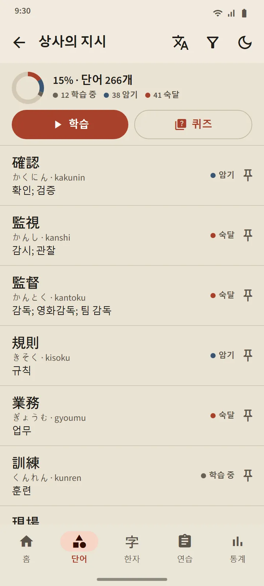

단어
오래 기억에 남는 단어 공부
모든 카드는 최신 간격 반복 알고리즘인 FSRS로 일정이 잡혀요. 스스로 평가하면 앱이 그 단어를 언제 다시 보여 줄지 계산하고, 다음 간격은 버튼마다 적혀 있어요. 단어는 신규에서 학습 중, 암기를 거쳐 숙달까지 올라가고, 마지막 단계는 퀴즈로만 올라갈 수 있어요.
- 11개 분야, 95개 주제. 직장 분야에는 상사의 지시, 작업 안전, 근무 일정과 계약부터 공장, 건설, 농업, 음식점, 숙박, 돌봄까지 21개 주제가 있어요.
- 덱마다 한 화면. 진행률, 모든 단어의 학습 상태, 학습 버튼과 퀴즈 버튼.
- 38,085개 단어를 담은 포켓 사전. 한자, 가나, 로마자, 뜻으로 검색할 수 있어요.
